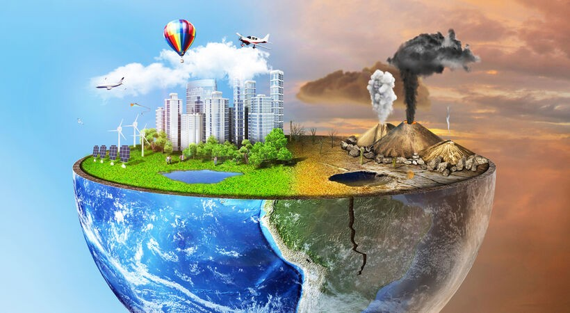
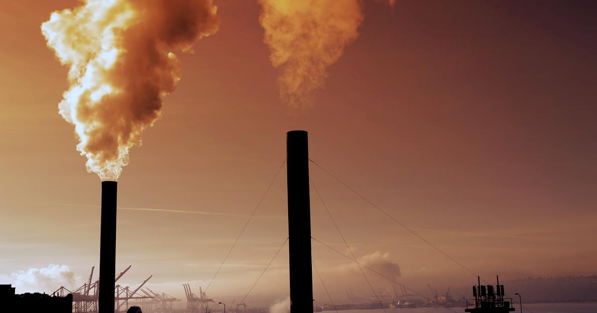

ATMOSPHERIC POLLUTION
What is Pollution?
The word pollution was derived from the Latin word 'pollutus' meaning 'to make unclean'.
Pollution is the introduction of contaminants into the natural environment that cause adverse change.

Atmospheric Pollution/Air Pollution
Atmospheric pollution is the introduction of chemicals, particulates, biological materials, or other harmful materials into the Earth's atmosphere, possibly causing disease, death to humans, damage to other organisms such as food crops, or to the environment.

Causes of Air Pollution
Natural Sources
- Dust from natural sources, usually large areas of land with few or no vegetation.
- Methane, emitted by the digestion of food by animals, for example cattle.
- Smoke and carbon monoxide from wildfires.
- Volcanic activity, which produces sulfur, chlorine, and ash particulates.
Man Made Sources
- Mobile Sources include smoke from motor vehicles, marine vessels, and aircraft.
- Fumes from paint, hair spray, varnish, aerosol sprays and other solvents.
- Waste deposition in landfills, which generate methane.
- Sources include smoke stacks of power plants, etc.
Types of Atmospheric Pollution
Acid Rain
- Acid Rain is Precipitation that has a pH level less than that of natural rainwater (which is about 5.6 due to dissolved carbon dioxide.)
- It is formed when sulphur dioxides and nitrogen oxides combine with water vapour and precipitate as sulphuric acid or nitric acid in rain, snow or fog.
Green House Effect
- The greenhouse effect is a process by which thermal radiation from a planetary surface is absorbed by atmospheric greenhouse gases, and
is re-radiation in all directions. Since part of this re-radiation is back towards the surface, energy is transferred to the surface and the lower atmosphere.
- As a result, the temperature there is higher than it would be if direct heating by solar radiation were the only warming mechanism.
Ozone Layer Depletion
- The ozone layer sits in the stratosphere approximately 25km above the Earth. It is made up of ozone gases that act like a blanket to stop too much UV radiation
form the sun entering the atmosphere. The Ozone layer prevents the harmful UV radiation entering the Earth, which is vital because too much of these UV rays can
cause cancer, cataracts and DNA damage.
- As UV radiation hits the Ozone layer the ozone gas absorbs the radiation and turns it into oxygen.
- Small amounts of ozone are constantly being made by the action of sunlight on oxygen. At the same time, ozone is being broken down by natural and unnatural processes that lead to ozone depletion.
- If this process is greated that the production of ozone then the ozone layer becomes thinner and less effective.
- Ozone depletion occurs when the natural balance between production and destruction of stratospheric ozone is tipped in favour of destruction.
- As of now there is a huge hole in the Ozone Layer above Antartica.